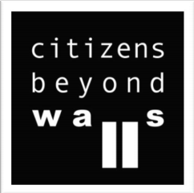
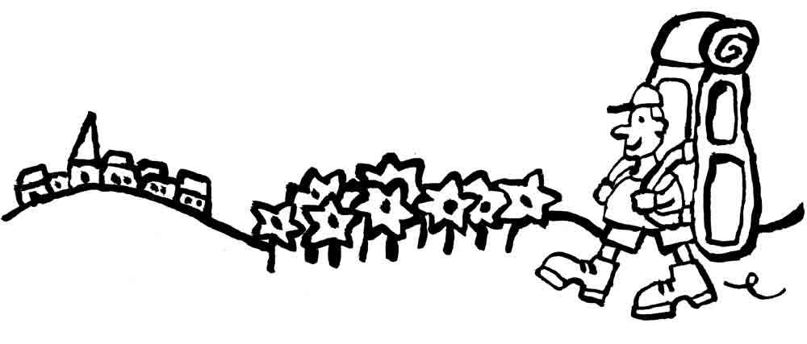
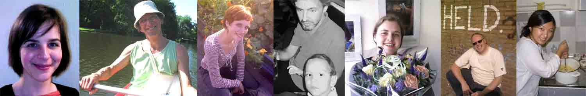

Projecten
Overig
Research Report - Citizens Beyond Walls Project

It all started in December 2013 in Berlin, where representatives of eight European SCI-branches came together to set the standards for a project focusing on opposing extreme right wing growth in Europe. The project was called ‘Citizens beyond Walls’ and besides organizing activities in order to raise awareness, such as the Peace Week, the project should also have to be based on thorough research on national level. Thus, the eight participating branches have each conducted research in their respective territories with the aim of identifying right wing extremism as well as non-violent ways to oppose extreme right wing growth. The results of the research in The Netherlands is presented here.
Werk aan de wereld
Doe een internationaal vrijwilligersproject 
In het hoogseizoen is er keuze uit ongeveer 1000 projecten voor jong en oud, ver weg of dichtbij, voor langere of kortere tijd, met fysieke inspanning of met je creativiteit. Altijd contact met de plaatselijke bevolking. Projecten duren 2 tot 3 weken, maar we hebben ook lange-termijn-projecten van 3 tot 6 maanden. Kijk hier naar welke bestemmingen VIA uitzendt.
Kijk voor projecten in het projectenoverzicht. In maart beginnen de projecten voor de zomer binnen te lopen, maar daarvoor ook al.
Aktief worden voor VIA
Heb je vorig jaar een project gedaan en wil je meehelpen met de organisatie, laat dat ons weten via een mailtje (zie contact). Je kunt je eigen vrijwilligersproject organiseren, meehelpen met de PR groep, of het voorbereidingsweekend opzetten. Hier staan enkele vacatures.
